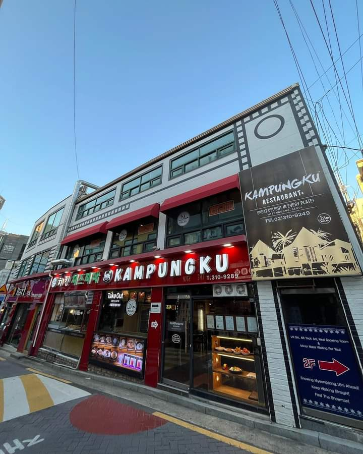

Kampungku Restaurant in Seoul: A Malaysian Food Stop Near Myeongdong
At a glance
- Address: 16-4 Namsan-dong 2(i)-ga, Jung District, Seoul
- Google rating: 4.7/5 from 3,906 reviews at the time of checking
- Known for: Malaysian food; recent search results also mention Korean fried chicken
- Best for: Visitors seeking a change from familiar Korean dishes or looking for a restaurant presented in search results as halal
Seoul is an easy city in which to spend days moving between Korean barbecue, noodle shops and market snacks. Kampungku Restaurant offers a different direction: it is associated with Malaysian food, making it a useful option when your group wants a break from Korean cuisine—or when you are curious about Southeast Asian flavours while exploring central Seoul.
The restaurant’s address is in Namsan-dong 2(i)-ga, in Jung District. Its location makes it relevant to visitors planning time around the Myeongdong area, but use the map link below to check the precise route from wherever you are. The Korean address and name can be useful to show a taxi driver or someone helping you navigate: 캄풍쿠 is a Korean rendering of Kampungku.
What to expect from the food
Recent Korean-language search results describe Kampungku as a halal restaurant and mention Malaysian food. One result suggests Korean fried chicken alongside Malaysian dishes. These search snippets are useful leads, not a definitive or current menu, so treat specific dishes and availability as details to confirm with the restaurant before visiting.
If you are choosing what to order, start by asking which Malaysian dishes are available that day and whether the kitchen can accommodate your dietary needs. Malaysian cooking draws on a range of regional and cultural influences, but that general context does not tell you exactly what this restaurant serves. The safest approach is to ask about ingredients, spice level and preparation rather than assuming a dish will match your preferences.
For Muslim visitors, the restaurant is presented as halal in recent search results, but online descriptions do not replace direct confirmation. If halal requirements are important to you, contact the restaurant to ask about its current certification or sourcing practices, and check whether the particular dishes you plan to order meet your needs. This is especially worthwhile if you have strict requirements about ingredients or cross-contact.
Why it may suit a Seoul itinerary
Kampungku can be a practical choice when your travel party has varied tastes. A Malaysian restaurant offers an alternative to the dishes many visitors have already tried, while the search results’ mention of Korean fried chicken may help make the place worth checking for diners hoping to share familiar-style food with friends. Because menus can change, confirm what is actually being served rather than planning your day around a single dish.
The restaurant also gives curious eaters a chance to explore a cuisine beyond the Korean food that naturally dominates many Seoul itineraries. If you are new to Malaysian food, ask staff for recommendations and let them know how much heat you enjoy. If you have allergies, explain them clearly and ask whether the kitchen can safely avoid the relevant ingredient; do not rely on a dish name alone.
Good to know before you go
- Check current details: Opening hours, menu, prices and reservation options are not confirmed here. Consult the restaurant’s official Facebook page or contact it directly before setting out.
- Use the map pin: Enter the full address or open the Google Maps link below. As with any city address, check the pinned entrance and walking route rather than relying only on the neighbourhood name.
- Ask about dietary needs: Search results describe the restaurant as halal, but verify current practices directly if this matters to your meal.
- Keep expectations flexible: Online menu suggestions may be old or incomplete. Ask what is available when you arrive.
- Ratings are a snapshot: Google showed 4.7/5 from 3,906 reviews at the time of checking. Ratings can change, and individual reviews may refer to different visits or dishes.
Naver was also checked, but no confident local listing match was identified. Recent Naver search results did include references to Kampungku and halal dining; those snippets support treating it as an option to investigate, not as confirmation of current service details.
Useful links
FAQ
Is Kampungku Restaurant halal?
Recent search results describe it as a halal restaurant, but confirm its current certification, sourcing and preparation practices directly if you have specific requirements.
What kind of food does Kampungku serve?
It is associated with Malaysian food. A recent search result also mentions Korean fried chicken, but check the restaurant’s current menu for available dishes.
Should I check anything before visiting?
Yes. Confirm current opening hours, menu and dietary details through the official Facebook page or by contacting the restaurant, then use Google Maps to plan your route.